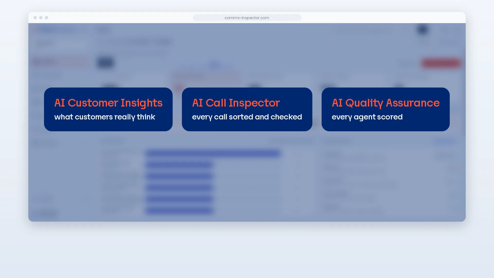

Production scale
30M+ calls analysed every year
Automated supervision and quality control running in production at Home Credit Philippines.
Read the full storyAI Comms Inspector analyses every customer conversation and automatically surfaces what matters to your business.
Every day, customers tell you what they want, what frustrates them and when they plan to leave. Most companies hear a small share of those conversations and guess the rest.
The problem
Buying signals are spoken in service calls that sales never hears.
Question we answer
Where are we leaving money on the table in conversations we already have?
For: Sales, CRM, customer value management
The problem
Churn models track behaviour, not the call where a customer says they are leaving.
Question we answer
Which customers are about to leave us, and why?
For: Customer experience, retention, CRM
The problem
Call reasons are picked by the agent, so nobody sees the real ones.
Question we answer
Which complaints are costing us customers?
For: Customer experience, operations, complaints
The problem
Rules apply to every call, but compliance checks cover only a few.
Question we answer
Are our agents saying things that could get us fined?
For: Compliance, risk, legal
The problem
A few calls per agent, scored by different people, is not a standard.
Question we answer
Which teams, sites or outsourcers deliver a measurably different quality of service?
For: Contact centre, operations, quality
The problem
Feedback reaches the agent long after the call it is about.
Question we answer
What should each agent learn from their own calls, right after they end?
For: Contact centre, team leaders
These are six blind spots of many. Bring the one you most need to see.
AI Comms Inspector already processes customer conversations at enterprise scale and turns them into measurable business outcomes.
Automated supervision and quality control running in production at Home Credit Philippines.
Read the full storyAI-generated sales signals help target more relevant offers.
Every selected interaction assessed consistently against predefined business, process and compliance rules.
Proven delivery experience at enterprise scale. Built on Bull Group's experience from more than 300 enterprise AI projects.
One solution, tailored to answer
the business questions that matter the most.
Automated communication analyser that detects sales and engagement insights — life events, financial needs, and voice of customer — from every conversation.
Multi-level call categorisation and identification of clients, products, and regulated processes — KYC, MiFID II, GDPR, and promotion-condition checks.
Checks agents follow your sales or support process, supervises chat and sales-conversation quality, and monitors performance across teams and agents.
Automated call feedback sent to each operator, with summaries and recommendations tailored to your call scripts and calling propositions.
Even at one of Europe’s largest banking groups, each answer about our customers cost months and a real budget, so we only asked the big questions. The sharper ones, the follow-ups, the “wait, why did they say that?”, never got asked. Curiosity had a price, and it was too high. Today, with AI Comms Inspector, the same question is a query over every conversation, answered with the evidence attached.
Bring the question you could never afford to ask.
AI Comms Inspector captures the full context of each interaction and answers the business questions behind every conversation.
Calls, meetings, chats, emails and notes — as audio files or existing text.
Audio is transcribed and all communication data is prepared for consistent AI analysis.
AI evaluates every interaction against your predefined business, sales, customer experience or compliance questions.
Insights are delivered as structured data, dashboards and signals for CRM, campaigns, reporting and customer profile enrichment.
Most teams hear only 1–5% of customer conversations. See what Comms Inspector finds in the rest.

Insights for sales, checks for compliance, scores for quality and answers in plain language, from every call, chat and email.
Enter your work email to watch the demo.
Want to see it on your own conversations?
Book a use-case sessionValuable sales signals were hidden in call volume.
Customers mentioned life events, financial needs, and product interests during routine calls.
The volume made manual review impossible, so these opportunities never reached sales and marketing teams.
Every conversation was analysed.
The solution evaluated calls and transcripts against predefined business questions to identify relevant customer needs and product-related signals.
It then turned these findings into structured insights for CRM campaigns.
Campaigns with AI-generated insights converted above average.
Valuable cross-sell and up-sell signals were extracted from customer conversations with the contact centre and fed into CRM campaigns.
Three ways to get AI-driven communication analysis —
and what each one actually costs you.
Develop a custom AI solution in-house with your own engineering team.
Leverage our proven AI products and pay only for results. Zero risk, maximum speed.
We are backed by the French State (APE) and we are on a mission to create something impactful on an entire European level. No quick-ROI pressure, no squeezing gains before the product can truly shape Europe's competitiveness.
Subscribe to an off-the-shelf AI platform from a third-party vendor.
For years we ran customer intelligence inside banks, insurers, and telcos. Now we have built that experience into the AI agents at the core of Comms Inspector, and the people below work with you on them.
The people you will meet in the session
Co-founded DataSentics and led 20+ data-driven innovations for 10+ financial institutions. Before that, marketing automation lead at Erste Group.
Jiřina helps organisations turn data into actionable insights, build smarter customer engagement strategies, and implement AI solutions that deliver measurable business value.
Connect on LinkedIn with Jiřina Nedbálková (opens in a new tab)
Personalisation project owner for Erste Group and NN Group, product lead for AdPicker at CPEX, the largest Czech online publisher network.
Three steps. Each one is a separate decision, and you continue only if the previous step gave you a reason to.
One hour. You bring a decision you face this year; we show what your customer conversations could answer about it, and what they cannot.
One use case, your full history, analysed once. You get a board-ready report with the evidence, as a fixed-scope project delivered in weeks, at a fixed price.
If the analysis proves its value, the agents work on your conversations every day. We set them up around your CRM, your processes, and the signals that matter to you, and they surface insights and triggers as new conversations arrive.
A board-ready report with the evidence behind each finding, the customer lists your teams can act on, and the three fixes that would move the numbers most. We need one export of recordings or transcripts, chats, and emails, read-only, inside your own cloud. Fixed price quoted on your volume.
In your own Azure, AWS, or GCP environment, in the EU, on models you are not renting. Your conversations never leave your perimeter and you keep the intellectual property. That is the one thing we will say about the engine.
If you have a few thousand conversations a year, a good analyst can read them. If you keep no recordings or transcripts, there is nothing to read yet. If what you want is another dashboard, there are cheaper ones. We will tell you so in the session.
Only the first step needs a decision today.
Continue to the form ↓Choose a decision you face this year. David, Jiřina, or Jiří will spend an hour with you on what your customer conversations can say about it.